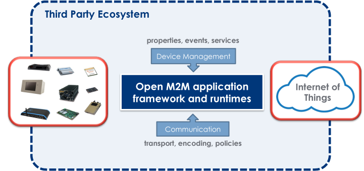
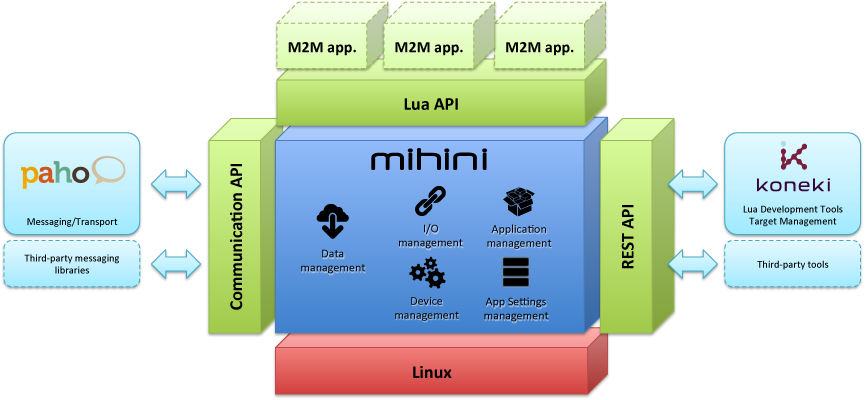

The M2M Industry Working Group fosters the creation of an embedded extensible runtime enabling M2M vertical applications on top of open APIs.
A vast majority of today's M2M solutions are designed in an ad hoc manner. Depending on the business domain and on the targeted platform (OS, H/W capabilities, …) very different and often incompatible architectures are implemented.
We want to provide an embedded platform that M2M-enables embedded devices and exposes high-level API for device management, wired/wireless communication, …

We believe that one of the biggest hurdles to create industrial M2M solutions is the complexity to develop the applications that are embedded on the communicating devices on the field.
There are many domains with business opportunities for M2M solutions where people do not want to have to learn a complex language such as C, when all they want to do is manipulate a few data structures and send them to a remote server. What if Lua could be used to simplify the development of embedded applications, thus following the path of the mobile and game development industries?
Lua is a powerful, fast, lightweight, embeddable scripting language.
Lua combines simple procedural syntax with powerful data description constructs based on associative arrays and extensible semantics. Lua is dynamically typed, runs by interpreting bytecode for a register-based virtual machine, and has automatic memory management with incremental garbage collection, making it ideal for configuration, scripting, and rapid prototyping.
from Lua.org
Mihini is an Eclipse project created in August 2012 with the aim of delivering an embedded platform that:
